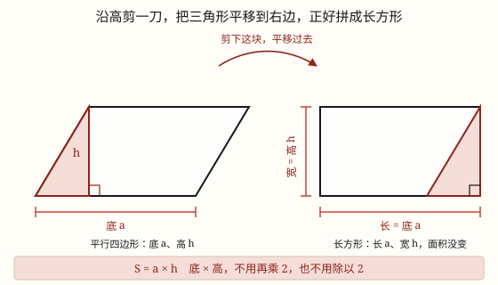

平行四边形的面积
沿高剪一刀，把三角形平移到另一边，平行四边形就变成长方形，所以面积 = 底 × 高。
| 所属主题 | 图形的认识与测量 |
|---|---|
| 所属模块 | 图形与几何 |
| 课标学段 | 第三学段（5~6年级） |
| 前置知识 | 长方形和正方形的面积、平行四边形和梯形的认识 |
| 核心素养 | 几何直观空间观念推理意识 |
课标要求
| 图形与几何·图形的认识与测量 | 知道面积单位千米²、公顷；探索并掌握平行四边形、三角形和梯形的面积计算公式；会估计不规则图形的面积（例33）。 印刷第 32 页 行为动词：掌握 |
|---|---|
| 图形与几何·图形的认识与测量 | 在图形认识与测量的过程中，进一步形成量感、空间观念和几何直观。 印刷第 33 页 行为动词：感悟 |
说明
把平行四边形放在方格纸上，先数格子：整格的直接数，不满格的拼一拼。数着数着你会发现一件有意思的事——左边凸出去的那一块，正好能补到右边凹进去的地方，拼起来就是一个长方形。
这个办法叫割补法：沿着高剪一刀，把剪下的直角三角形平移到另一边，平行四边形就变成长方形了。剪和移都只是「搬家」，面积一点没多也没少。
再看对应关系：长方形的长，就是平行四边形原来的底 a；长方形的宽，就是平行四边形原来的高 h。长方形面积 = 长 × 宽，所以平行四边形的面积 = 底 × 高，写作 S = ah。
为什么一定要沿高剪？ 因为长方形的四个角都是直角。高和底是垂直的，沿高剪下来的边平移过去，才能和底边拼成直角；随便斜着剪一刀，接缝处就不是直角，拼出来是个歪的图形，没法用「长 × 宽」。
底和高还必须对应：高是这条底上的高，两者互相垂直。同一个平行四边形，以不同的边为底，就有不同的高，但底乘高的积总是一样的——因为面积本来就没变。
使用场景
校园花坛：平行四边形花坛铺草皮，先量出底和高算面积，再乘每平方米的价钱。
做班旗、剪彩布：班旗是平行四边形，一面要用多少布，算的就是这个面积。
铺地砖、装扣板：平行四边形地砖、装饰板，买多少块得先算出一块的面积。
农田估产：平行四边形的地块，知道面积才能按每平方米的产量估总产。
比较两块地：形状不一样的两块地，谁大谁小，算面积比一比最公道。
注意点
别把斜边当高。底 6 厘米、斜边 5 厘米的平行四边形，如果高是 4 厘米，面积是 6 × 4 = 24 平方厘米，不是 6 × 5 = 30。高一定是垂直的那条。
底和高要对应。拿一条底去配另一条底上的高，算出来一定不对；题目给哪条底，就找那条底上的高。
面积单位要平方。底和高都按厘米量，面积就是平方厘米；写成「厘米」是把面积当成了长度。
别和周长混。平行四边形没有「(a + b) × 2 算面积」这种说法，那是周长的思路；「铺满、盖住、种满」才用面积。
剪拼时不要重叠也不要留缝。剪下的那块要正好补上另一边，多一块少一块，拼出来的就不是长方形了。
为什么是这样

图 1：沿高剪开、平移过去，面积一点没多也没少，平行四边形就这样变成长方形
算理推导
先回到已经会算的图形：长方形的面积 = 长 × 宽，这是三年级就掌握的本事。平行四边形斜着边，方格对不齐，直接数很麻烦——那就想办法把它变成会算的长方形。
沿高剪一刀：从顶点向底作高，沿着这条高剪下一个直角三角形。这条高和底垂直，是「正着」剪下去的，剪口是一条竖直线。
把剪下的三角形平移到另一边。它的斜边刚好和原来另一侧的斜边重合，凸出的补进凹处，一点不重叠、一点不留缝，拼成一个长方形（看图 1）。
找对应：长方形的长就是平行四边形的底 a，长方形的宽就是平行四边形的高 h。剪拼只是搬家，面积没变，所以平行四边形面积 = 长 × 宽 = a × h。
为什么必须沿高剪？长方形的角都是直角。高与底垂直，剪下的边平移后才能和底拼成直角；斜着剪，接缝是斜的，拼出来还是斜的四边形，就用不上「长 × 宽」这条老经验了。
动手实验
在方格纸上画一个底 6 格、高 4 格的平行四边形，剪下来。沿高剪一刀，把三角形平移到另一边，量一量拼成的长方形：长 6 格、宽 4 格，一共 24 格。再把平行四边形「压扁」一点——底还是 6 格，高变成 3 格，重新剪拼，长方形变成 18 格。底没变、高变小，面积跟着变小，正好说明面积是由底和高一起决定的。
按场景的例题
例 1（场景：校园生活） 给班级做一面平行四边形班旗
班旗是平行四边形，底边长 1.2 米，这条底上的高是 0.8 米。做一面旗需要多少平方米彩布？
解：直接用 S = ah：1.2 × 0.8 = 0.96（平方米）。想把小数乘法算稳：12 × 8 = 96，两位小数得 0.96。
答：需要 0.96 平方米彩布。
例 2（场景：农业生产） 一块平行四边形菜地收白菜
菜地的底是 25 米，高是 16 米。每平方米收白菜 3 千克，这块地一共能收多少千克？
解：面积 25 × 16 = 400 平方米；总产量 400 × 3 = 1200 千克。
答：一共能收 1200 千克。
例 3（场景：工程建造） 装修用的平行四边形装饰板
一块平行四边形装饰板，底 4.5 分米，高 2.4 分米。它的面积是多少平方分米？
解：S = ah = 4.5 × 2.4。先算 45 × 24 = 1080，两位小数得 10.8。
答：面积是 10.8 平方分米。
例 4（场景：绿化照明） 小区里的平行四边形花坛
花坛的底是 8 米，高是 5.5 米。铺草皮每平方米 12 元，铺满这个花坛要多少元？
解：面积 8 × 5.5 = 44 平方米；总价 44 × 12 = 528 元。
答：要 528 元。
常用推论
平行四边形的面积 S = ah；反过来，底 a = S ÷ h，高 h = S ÷ a。
等底等高的平行四边形，面积一定相等，形状可以完全不同——因为它们都能剪拼成同一个长方形。
底不变时，高扩大到原来的 n 倍，面积也扩大到 n 倍；高不变时，底扩大到 n 倍，面积同样扩大到 n 倍。
平行四边形能剪拼成长方形，所以它的面积和等底等高的长方形面积相等，只是形状不同。
易错点
错底 6 厘米、斜边 5 厘米，算成 6 × 5 = 30 平方厘米。
为什么错把斜边当成了高。斜边是斜着量的，不是两条平行底之间的垂直距离，乘出来的不是面积。
正确找到这条底上的高（如 4 厘米），6 × 4 = 24 平方厘米。
错底 6 厘米配了另一条底上的高 3 厘米，算成 18 平方厘米。
为什么错底和高没有对应。高必须垂直于所用的那条底，配错了等于用别人的高算自己的面积。
正确先确认高是哪条底上的：题目说「底 6 厘米上的高是 4 厘米」，就用 6 和 4。
错算出 24，答案写成「24 厘米」。
为什么错底和高都是长度，相乘得到的是面积，单位要变成平方。
正确写成 24 平方厘米（\textcm^2）。
错觉得平行四边形「斜着放，边更长」，面积一定比同底同高的长方形大。
为什么错斜边变长只是形状被推歪了，两条底之间的垂直距离（高）没变，能铺的小方格个数就没变。
正确面积只看底和高，S = ah，与斜边长短无关。
直观理解
平行四边形像一摞被推歪的作业本：本子的厚度没变、每本的长也没变，只是整体错开了一点。你把它推正，还是那一摞，占地一点没多。所以只要「推正」变成长方形，用长乘宽一算，就是它的面积。
平行四边形，割补变长方；底乘高得面积，斜边不能当高量。